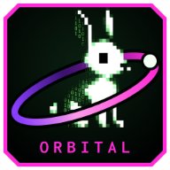

Même entreprise fictive. La passerelle d'audit s'ouvre aussi depuis le dossier Audit du code, sur le bureau du poste.
Projet applicatif cyber
Une application de sécurité en une journée
Tenant Zéro, le poste Orbitale
Systèmes et Entra ID
Audit du code, la passerelle d'audit
Test d'intrusion en boîte noire et Python
Le poste s'installe comme une application avec Edge ou Chrome : bouton Installer ORBITAL sur son écran de connexion.